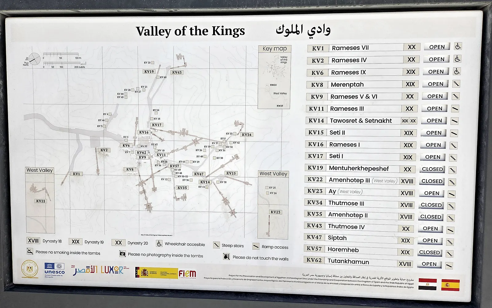
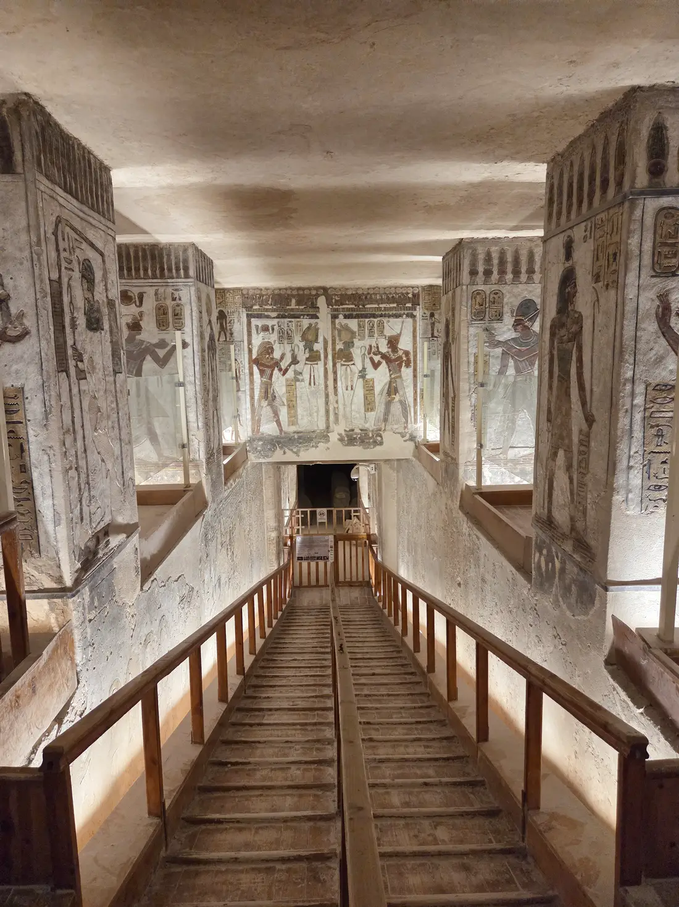
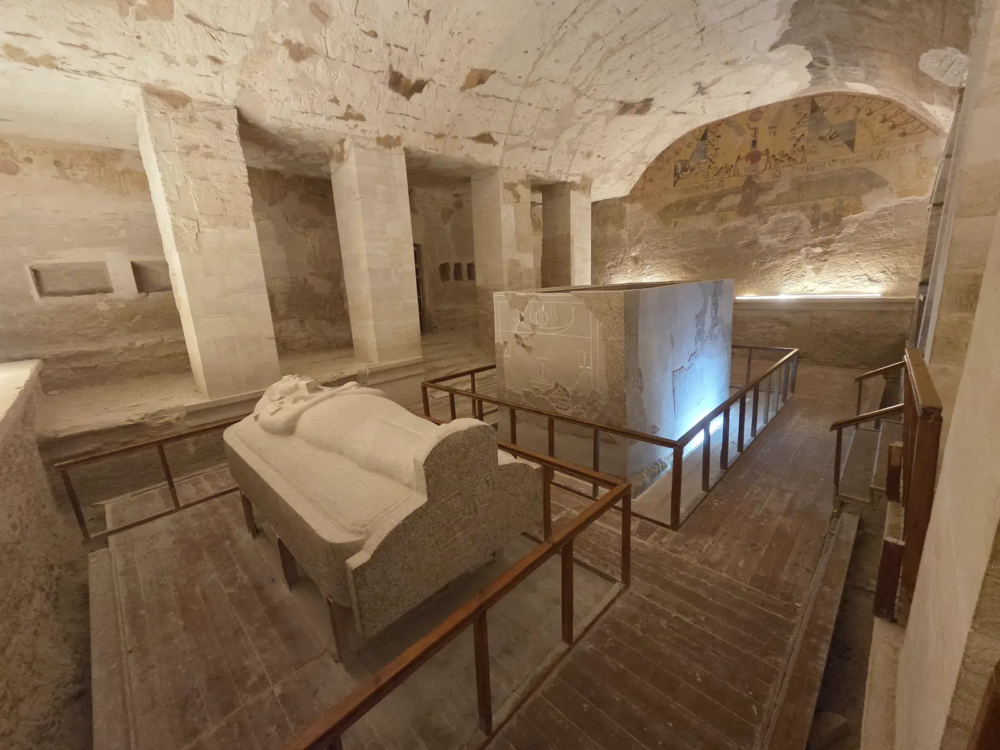
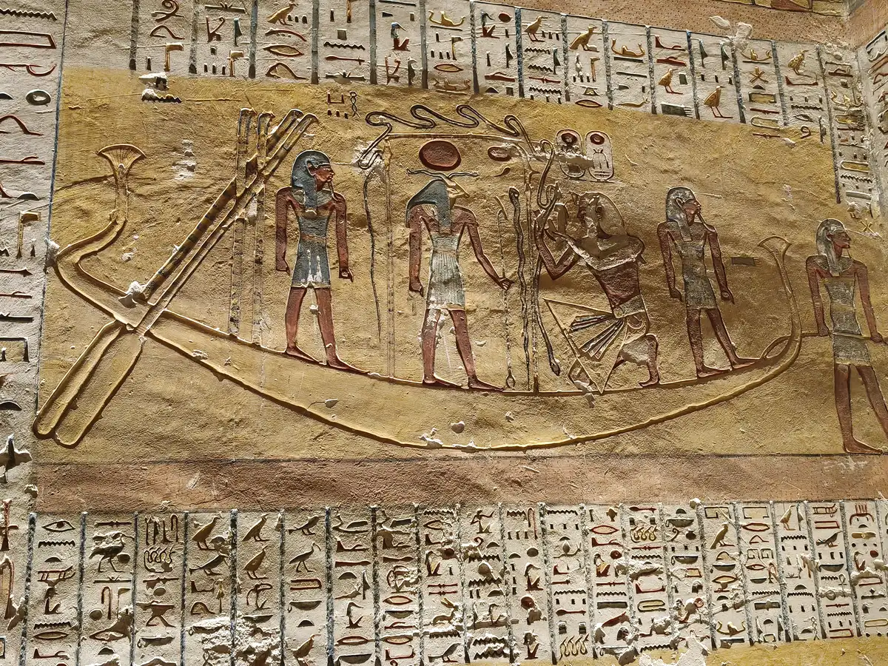
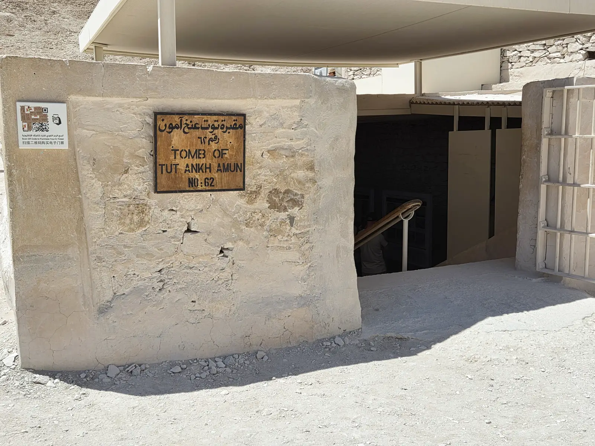
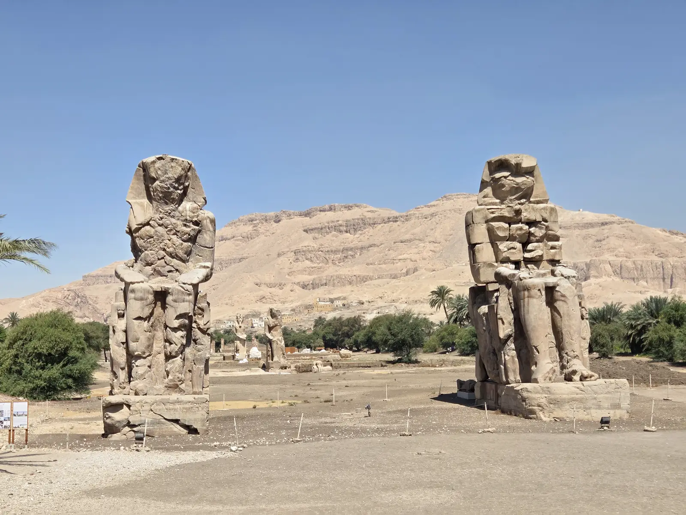

Le billet de base de la Vallée des Rois donne droit à trois tombes, pas une de plus. Sur une soixantaine de tombes connues, seule une dizaine est ouverte un jour donné : il faut donc choisir. Nous l'avons visitée le 22 avril 2026, pour notre dernière matinée à Louxor, avec trois tombes conseillées par notre chauffeur : Ramsès III, Mérenptah et Ramsès IV. Voici comment fonctionne le billet, ce que chacune de ces tombes vaut, et ce que nous ferions autrement.
Comment fonctionne le billet
Le billet de base coûte 750 LE par personne (environ 13 €, c'est ce que nous avons payé en avril 2026). Il donne accès à trois tombes au choix parmi celles ouvertes le jour de la visite ; un gardien poinçonne le billet à l'entrée de chaque tombe. Les tombes ouvertes changent par rotation, pour limiter l'usure des peintures : la liste du jour est affichée au guichet.
Quatre tombes demandent un billet à part, en plus du billet de base (il reste obligatoire même si vous ne voulez voir que celles-ci) :
| Billet | Prix | ≈ en euros |
|---|---|---|
| Billet de base (3 tombes) | 750 LE | ~13 € |
| Ramsès V et VI (KV9) | + 220 LE | ~4 € |
| Toutânkhamon (KV62) | + 700 LE | ~12 € |
| Séthi Ier (KV17) | + 2 000 LE | ~33 € |
| Aÿ (WV23, vallée de l'Ouest) | + 200 LE | ~3 € |
| Navette électrique (aller-retour) | 20 LE | < 1 € |
Tarifs étrangers adultes : billet de base payé lors de notre visite (avril 2026) ; suppléments et navette relevés en octobre 2026 dans des guides de voyage récents. Conversion au taux de 1 € ≈ 60 LE. Les prix changent souvent en Égypte : vérifiez au guichet.
Deux idées reçues à corriger avant d'y aller :
- La tombe de Ramsès II ne se visite pas. Creusée en fond de vallée, la tombe KV7 a été ravagée par les crues ; elle est fermée au public et fait l'objet de fouilles. Les foules se pressent plutôt devant les tombes les plus connues de la liste du jour.
- Néfertari n'est pas dans la Vallée des Rois. Sa tombe se trouve dans la Vallée des Reines, un autre site avec son propre billet d'entrée, auquel s'ajoute un supplément de 2 000 LE pour la tombe elle-même.
Côté horaires, le site ouvre à 6 h et ferme vers 17 h en été, 16 h en hiver. Du guichet, une navette électrique monte jusqu'à l'entrée des tombes : prenez-la, la route est courte mais en plein soleil.

Les tombes de la vallée et leurs occupants
À l'entrée des tombes, ce panneau donne le plan de la vallée et la liste des tombes, désignées par leur numéro (KV pour King's Valley, WV pour la vallée de l'Ouest). Voici celles qu'il affichait lors de notre visite, en gras les trois que nous avons choisies, avec quelques repères sur leurs occupants. Toutes ne sont pas ouvertes en même temps : vérifiez la liste du jour au guichet.
| N° | Tombe de | À savoir |
|---|---|---|
| KV1 | Ramsès VII | XXe dynastie. Règne bref et tombe modeste, proche de l'entrée du site. |
| KV2 | Ramsès IV | XXe dynastie, fils de Ramsès III. Un plan antique de sa tombe, dessiné sur papyrus, est conservé au Musée égyptien de Turin. |
| KV6 | Ramsès IX | XXe dynastie. Sous son règne se tiennent les procès des pilleurs de tombes de Thèbes, consignés dans le papyrus Abbott. |
| KV8 | Mérenptah | XIXe dynastie, fils et successeur de Ramsès II, monté sur le trône déjà âgé. Sa stèle dite « d'Israël » porte la plus ancienne mention connue de ce nom. |
| KV9 | Ramsès V et VI (supplément) | XXe dynastie. Commencée pour Ramsès V, reprise par Ramsès VI. Les huttes des ouvriers de ce chantier ont recouvert l'entrée de la tombe de Toutânkhamon, restée cachée jusqu'en 1922. |
| KV11 | Ramsès III | XXe dynastie. Vainqueur des « Peuples de la mer », il a été visé à la fin de son règne par la « conspiration du harem », un complot de palais. |
| KV14 | Taousert et Sethnakht | Commencée par Taousert, reine devenue pharaon à la fin de la XIXe dynastie, puis reprise et agrandie par Sethnakht, fondateur de la XXe. |
| KV15 | Séthi II | XIXe dynastie, fils de Mérenptah. Sa momie a été retrouvée en 1898 dans la cache de la tombe d'Amenhotep II (KV35). |
| KV16 | Ramsès Ier | Fondateur de la XIXe dynastie et grand-père de Ramsès II. Règne très court : tombe courte, terminée à la hâte. Découverte par Giovanni Belzoni en 1817. |
| KV17 | Séthi Ier (supplément) | XIXe dynastie, père de Ramsès II. La plus longue tombe de la vallée, découverte par Giovanni Belzoni en 1817. |
| KV19 | Montouherkhopshef | Prince de la XXe dynastie, fils de Ramsès IX, mort avant son père. Tombe inachevée, mais aux peintures d'une grande finesse. |
| WV22 | Amenhotep III (vallée de l'Ouest) | XVIIIe dynastie, père d'Akhenaton. Les Colosses de Memnon sont les deux statues qui gardaient son temple funéraire. |
| WV23 | Aÿ (vallée de l'Ouest) (supplément) | XVIIIe dynastie. Haut dignitaire devenu pharaon à la mort de Toutânkhamon. |
| KV34 | Thoutmôsis III | XVIIIe dynastie, grand roi conquérant. Entrée percée haut dans la falaise, chambre en forme de cartouche décorée comme un papyrus. Découverte par Victor Loret en 1898. |
| KV35 | Amenhotep II | XVIIIe dynastie. Victor Loret y a trouvé en 1898 une cache de momies royales (Thoutmôsis IV, Amenhotep III, Mérenptah, Ramsès IV…). |
| KV43 | Thoutmôsis IV | XVIIIe dynastie. Sa « stèle du Rêve » se dresse entre les pattes du Sphinx de Gizeh. Tombe découverte par Howard Carter en 1903. |
| KV47 | Siptah | XIXe dynastie. Monté sur le trône enfant ; sa momie montre un pied gauche déformé. |
| KV57 | Horemheb | Général devenu le dernier pharaon de la XVIIIe dynastie. Tombe découverte par Edward Ayrton en 1908. |
| KV62 | Toutânkhamon (supplément) | XVIIIe dynastie. Tombe découverte presque intacte par Howard Carter en novembre 1922 ; son trésor est aujourd'hui au Grand Musée Égyptien. |
Les tombes marquées « supplément » demandent un billet en plus du billet de base. Repères historiques : Theban Mapping Project et notices encyclopédiques des tombes.
Nos trois tombes avec le billet de base
Nous avions préparé une liste avec des guides en ligne, mais c'est surtout notre chauffeur, rencontré la veille, qui a tranché : Ramsès III, Mérenptah et Ramsès IV. Nous ne pouvons pas les comparer aux tombes que nous n'avons pas vues, mais aucune des trois ne nous a déçus.
Faut-il un guide ? Nous avons visité sans guide, sur les conseils de notre chauffeur, et les couleurs suffisent à rendre la visite marquante. Un guide égyptologue reste un vrai plus : il explique ce que racontent les scènes (le voyage du soleil dans le monde souterrain, les livres funéraires) et sait quelles tombes valent le détour parmi celles ouvertes ce jour-là. Voir les visites guidées de la Vallée des Rois →
Ramsès III (KV11) — notre coup de cœur
C'est la tombe qui nous a le plus marqués. Les couleurs sont étonnantes après plus de trois mille ans : bleu profond, rouge ocre, jaune d'or, sur des parois entières. Elle a aussi une particularité rare dans la vallée : de petites chambres latérales s'ouvrent sur le premier couloir, avec des scènes de la vie quotidienne (boulangers, cuisiniers, bateaux) au lieu des seuls textes religieux. Dans l'une d'elles, deux harpistes aveugles ont donné son surnom à la tombe : la « tombe des Harpistes ».

Mérenptah (KV8) — la plus vaste des trois
Fils et successeur de Ramsès II, Mérenptah s'est fait creuser l'une des plus grandes tombes de la vallée : on descend longtemps, par des couloirs successifs, jusqu'à une chambre funéraire spacieuse. C'est cette ampleur qui frappe d'abord, avec beaucoup de couleurs dans les parties hautes des murs. Le bas des parois a été abîmé par les crues. Au fond, le couvercle en granit d'un des sarcophages, sculpté à l'effigie du roi, est resté en place.

Ramsès IV (KV2) — la plus facile d'accès
Proche de l'entrée de la vallée, elle se parcourt par des couloirs en pente douce : c'est la moins éprouvante des trois. Le roi étant mort après quelques années de règne, la tombe a été terminée en hâte et reste plus courte que les deux autres. Elle se termine sur une chambre funéraire où trône encore un grand sarcophage de granit, sous un plafond orné de la déesse du ciel, Nout. Ouverte depuis l'Antiquité, elle porte aussi des centaines de graffitis laissés par des visiteurs grecs et romains, puis des croix coptes.

Les suppléments : ce que nous avons laissé de côté
Nous avions envisagé un supplément. Nous y avons renoncé pour deux raisons : la chaleur, déjà très forte en fin de matinée, et notre état, puisque nous sortions de deux jours malades (un classique en Égypte). Avec un taxi pour la mer Rouge à 14 h, nous avons préféré trois tombes bien vues à cinq visitées au pas de course. Faute de les avoir vues, voici ce que disent les guides récents :
- Séthi Ier (2 000 LE) : la plus longue et l'une des mieux décorées de la vallée, régulièrement décrite comme la plus belle. Le prix est près de trois fois celui du billet de base ; c'est le supplément des passionnés.
- Ramsès V et VI (220 LE) : le supplément le moins cher, réputé pour ses plafonds astronomiques. Sur le papier, le meilleur rapport qualité-prix.
- Toutânkhamon (700 LE) : une petite tombe, peu décorée par rapport aux autres. Son trésor est au Caire : si vous passez par le Grand Musée Égyptien, vous en verrez davantage là-bas.

Notre matinée, concrètement
Nous logions sur la rive Ouest. La veille, pour le temple d'Hatchepsout, nous avions commandé une voiture via Uber ; le chauffeur nous avait proposé de nous attendre sur place pour 400 LE l'aller-retour, un prix correct. Il nous avait arrêtés en chemin pour acheter des bananes et donné des conseils sur les sites des environs : nous l'avons gardé pour la Vallée des Rois.
Départ de l'hôtel vers 9 h, après avoir négocié un départ tardif (check-out à 14 h). Premier arrêt aux Colosses de Memnon, sur la route : deux statues géantes d'Amenhotep III au milieu des champs, en accès libre et sans aucun vendeur. Puis la vallée : environ 1 h 30 à 2 h sur place pour nos trois tombes, navette comprise. Nous avons pris des photos au téléphone dans les tombes sans problème ni supplément, alors que les panneaux d'entrée affichent encore un pictogramme « pas de photo ».

Avec le recul, la vraie erreur a été l'heure. Nous sommes arrivés en milieu de matinée, quand la chaleur commençait à peser ; c'est elle, plus que le prix, qui nous a fait renoncer aux suppléments. Le récit complet de cette journée est dans notre journal de voyage.
Nos conseils
- Arrivez à l'ouverture, à 6 h. Le fond de la vallée est minéral et l'ombre rare. En avril, il fait déjà très chaud avant midi.
- Regardez la liste des tombes ouvertes au guichet avant de décider : la rotation peut fermer une tombe conseillée dans un guide.
- Ramsès III en priorité si elle est ouverte. Pour les deux autres, choisissez selon votre énergie : Mérenptah pour l'ampleur, Ramsès IV si vous voulez éviter les longues descentes.
- Gardez le même chauffeur pour la rive Ouest, en négociant l'aller-retour avec attente avant de partir. Vous pouvez combiner la vallée avec les Colosses de Memnon et le temple d'Hatchepsout ; nous avons fait Hatchepsout la veille.
- Emportez de l'eau et un chapeau, et prenez la navette. Le téléphone suffit pour les photos.
- Pensez à un guide. Nous n'en avions pas, mais c'est un vrai plus pour comprendre les scènes peintes et enchaîner la vallée, le temple d'Hatchepsout et les Colosses de Memnon sans gérer le transport. Comparer les visites guidées au départ de Louxor.
- Prévoyez plus de temps à Louxor que nous. Trois jours, c'était trop juste : comptez quatre ou cinq jours si vous voulez voir la rive Ouest sans courir. Notre guide Louxor récapitule les autres sites.
Pour le reste du budget (billets des autres sites, transports, hébergement), voir notre budget détaillé pour deux semaines en Égypte.